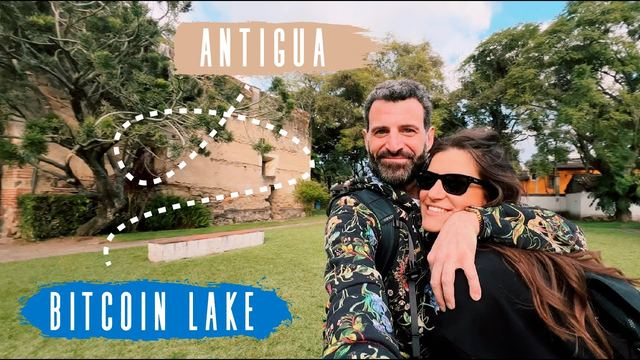

Videos and stories
Interviews, documentaries and talks about Bitcoin Lago since 2022. For each one we wrote down what it shows and what we learn from it.
Topics
Longer stories that bring several videos, posts and data together.

Visitors have managed full days on bitcoin around Panajachel, but their reports also show outdated listings, payment hiccups and the need for cash backup. Here is what worked, and what did not.

Bitcoin Lago began in 2021 with a meetup, a waiter and a US bitcoiner, and grew by walking into shops one by one. Here is what the interviews, press and posts say, and where they disagree.

In 2022 the Bitcoin Lago team at Lake Atitlán ran an old diesel generator on used restaurant oil to power bitcoin miners. Here is how it started, what the sources say it earned, and what we still cannot confirm.

What the education reports show, how visitors can help and what to confirm before offering time or money. A sourced guide, not an open call for donations or classroom visits.

Public counts of places that take bitcoin at the lake went from about 7 in March 2022 to more than 100, then back to about 40 to 60. Here is what the numbers can and cannot tell us.

A practical guide: prepare a Lightning wallet, find places to ask, pay with care and keep a cash backup. Historical visitor reports, not promises of acceptance today.
Why Bitcoin Lago started with Bitcoin Beach Wallet, what its custody limits meant, and how Lightning payments work for merchants and visitors.
Patrick Melder described a leaking wastewater digester, landfill methane and a planned waste-to-bitcoin facility. The record shows one different experiment got built: Kaboom, the used-cooking-oil generator, which Eliazar said was not working in 2025.


Videos

Fewer merchants than at the peak, students saving snack money in bitcoin, and a goal of 300,000 people, told by Eliazar in Panajachel.
Eliazar explains why more than 100 merchants fell to about 40 or 50, and what the team does now.

In a March 2025 interview recorded in Oslo, Ricky says Bitcoin Lago stopped chasing merchants and now puts its effort into teaching children.
A November 2023 talk from the Blink stage gives volume, transactions, graduation sizes and plans for the lake.

A one minute clip from the Blink team shows what paying with bitcoin looked like around Lake Atitlán in spring 2023.

The Reverend Hodl channel follows one morning of coffee, a stale map listing and a breakfast paid over Lightning, with a score of one in three.

Patrick Melder and Rudy Gallardo give a Guatemalan podcast the first hard numbers from the lake, days after the Lago Summit.

The Get Based channel followed Eliazar through Panajachel and San Juan La Laguna in a film published in March 2023.
Recorded in Panajachel in late 2022, Eliazar tells host Fred how a waiter's job led him to bitcoin and how an old generator came to mine on used cooking oil.

A two minute news report from November 2022 shows lake businesses accepting bitcoin while the price fell, and Patrick Melder explaining why the project goes on.

A one minute clip by Guatemalan outlet Soy502, published in April 2022, shows how early the project was: 15 businesses, from cafes to crafts.
One of the earliest long interviews with the founder of the project, recorded when about seven merchants accepted bitcoin and the first miner was about to start.